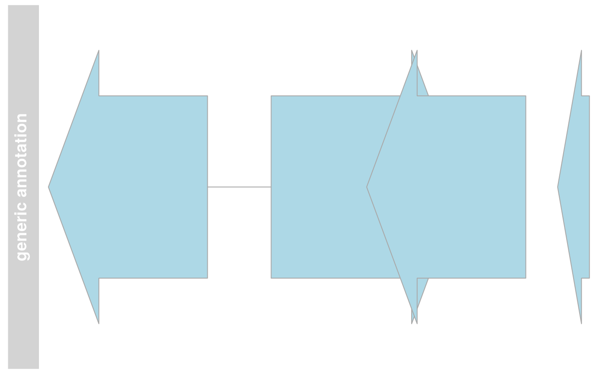

StackedTrack class and methods
StackedTrack-class.RdThe virtual parent class for all track types in the Gviz package which contain potentially overlapping annotation items that have to be stacked when plotted.
Objects from the Class
A virtual Class: No objects may be created from it.
Slots
stacking:Object of class
"character", the stacking type of overlapping items on the final plot. One inc(hide, dense, squish, pack,full). Currently, onlyhide(do not show the track items at all),squish(make best use of the available space) anddense(no stacking at all) are implemented.stacks:Object of class
"numeric", holding the stack indices for each track item. This slot is usually populated by calling thesetStacksmethod upon plotting, since the correct stacking is a function of the available plotting space.range:Object of class
GRanges, inherited from classRangeTrackchromosome:Object of class
"character", inherited from classRangeTrackgenome:Object of class
"character", inherited from classRangeTrackdp:Object of class
DisplayPars, inherited from classGdObjectname:Object of class
"character", inherited from classGdObjectimageMap:
Extends
Class "RangeTrack", directly.
Class "GdObject", by class "RangeTrack", distance 2.
Methods
In the following code chunks, obj is considered to be an object
of class StackedTrack.
Exported in the name space:
- stacking
signature(GdObject="StackedTrack"): return the current stacking type. Usage:stacking(GdObject)Examples:stacking(obj)
- stacking<-
signature(GdObject="StackedTrack", value="character"): set the object's stacking type to one inc(hide, dense, squish, pack,full). Usage:stacking<-(GdObject, value)Additional Arguments:value: replacement value.
stacking(obj) <- "squish"
Internal methods:
- drawGD
signature(GdObject="StackedTrack"): plot the object to a graphics device. The return value of this method is the input object, potentially updated during the plotting operation. Internally, there are two modes in which the method can be called. Either in 'prepare' mode, in which case no plotting is done but the stacking information is updated based on the available space, or in 'plotting' mode, in which case the actual graphical output is created. Note that the method for this particular subclass is usually called through inheritance and not particularly useful on its own. Usage:drawGD(GdObject, minBase, maxBase, prepare=FALSE, subset=TRUE, ...)Additional Arguments:minBase,maxBase: the coordinate range to plot.prepare: run method in preparation or in production mode.subset: subset the object to the visible region or skip the potentially expensive subsetting operation....: all further arguments are ignored.
Gviz:::drawGD(obj, prepare=FALSE)
- setStacks
signature(GdObject="StackedTrack"): recompute the stacks based on the available space and on the object's track items and stacking settings. Usage:setStacks(GdObject, from, to)Additional Arguments:from,to: compute stacking within a certain coordinates range. This needs to be supplied for the plotting function to know the current genomic coordinates.
Gviz:::setStacks(obj)
- stacks
signature(GdObject="StackedTrack"): return the stack indices for each track item. Usage:stacks(GdObject)Examples:Gviz:::stacks(obj)
- initialize
signature(.Object="StackedTrack"): initialize the object.
Inherited methods:
- [
signature(x="StackedTrack", i="ANY", j="ANY", drop="ANY"): subset the items in theStackedTrackobject. This is essentially similar to subsetting of theGRangesobject in therangeslot. For most applications, thesubsetmethod may be more appropriate. Additional Arguments:i,j: subsetting indices,jis ignored.drop: argument is ignored.
obj[1:5]
- chromosome
signature(GdObject="StackedTrack"): return the chromosome for which the track is defined. Usage:chromosome(GdObject)Examples:- chromosome<-
signature(GdObject="StackedTrack"): replace the value of the track's chromosome. This has to be a valid UCSC chromosome identifier or an integer or character scalar that can be reasonably coerced into one. Usage:chromosome<-(GdObject, value)Additional Arguments:value: replacement value.
chromosome(obj) <- "chr12"
- start, end, width
signature(x="StackedTrack"): the start or end coordinates of the track items, or their width in genomic coordinates. Usage:start(x)end(x)width(x)Examples:width(obj)
- start<-, end<-, width<-
signature(x="StackedTrack"): replace the start or end coordinates of the track items, or their width. Usage:start<-(x, value)end<-(x, value)width<-(x, value)Additional Arguments:value: replacement value.
start(obj) <- 1:10end(obj) <- 20:30width(obj) <- 1
- position
signature(GdObject="StackedTrack"): the arithmetic mean of the track item's coordionates, i.e.,(end(obj)-start(obj))/2. Usage:position(GdObject)Examples:- feature
signature(GdObject="StackedTrack"): return the grouping information for track items. For certain sub-classes, groups may be indicated by different color schemes when plotting. SeegroupingorAnnotationTrackandGeneRegionTrackfor details. Usage:feature(GdObject)Examples:- feature<-
signature(gdObject="StackedTrack", value="character"): set the grouping information for track items. This has to be a factor vector (or another type of vector that can be coerced into one) of the same length as the number of items in theStackedTrack. SeegroupingorAnnotationTrackandGeneRegionTrackfor details. Usage:feature<-(GdObject, value)Additional Arguments:value: replacement value.
feature(obj) <- c("a", "a", "b", "c", "a")
- genome
signature(x="StackedTrack"): return the track's genome. Usage:genome(x)Examples:genome(obj)
- genome<-
signature(x="StackedTrack"): set the track's genome. Usually this has to be a valid UCSC identifier, however this is not formally enforced here. Usage:genome<-(x, value)Additional Arguments:value: replacement value.
genome(obj) <- "mm9"
- length
signature(x="StackedTrack"): return the number of items in the track. Usage:length(x)Examples:- range
signature(x="StackedTrack"): return the genomic coordinates for the track as an object of classIRanges. Usage:range(x)Examples:- ranges
signature(x="StackedTrack"): return the genomic coordinates for the track along with all additional annotation information as an object of classGRanges. Usage:ranges(x)Examples:ranges(obj)
- split
signature(x="StackedTrack"): split aStackedTrackobject by an appropriate factor vector (or another vector that can be coerced into one). The output of this operation is a list of objects of the same class as the input object, all inheriting from classStackedTrack. Usage:split(x, f, ...)Additional Arguments:f: the splitting factor....: all further arguments are ignored.
- strand
signature(x="StackedTrack"): return a vector of strand specifiers for all track items, in the form '+' for the Watson strand, '-' for the Crick strand or '*' for either of the two. Usage:strand(x)Examples:strand(obj)
- strand<-
signature(x="StackedTrack"): replace the strand information for the track items. The replacement value needs to be an appropriate scalar or vector of strand values. Usage:strand<-(x, value)Additional Arguments:value: replacement value.
strand(obj) <- "+"
- values
signature(x="StackedTrack"): return all additional annotation information except for the genomic coordinates for the track items as a data.frame. Usage:values(x)Examples:values(obj)
- coerce
signature(from="StackedTrack", to="data.frame"): coerce theGRangesobject in therangeslot into a regular data.frame. Examples:as(obj, "data.frame")
- subset
signature(x="StackedTrack"): subset aStackedTrackby coordinates and sort if necessary. Usage:subset(x, from, to, sort=FALSE, ...)Additional Arguments:from,to: the coordinates range to subset to.sort: sort the object after subsetting. Usually not necessary....: additional arguments are ignored.
- displayPars
signature(x="StackedTrack", name="character"): list the value of the display parametername. Seesettingsfor details on display parameters and customization. Usage:displayPars(x, name)Examples:- displayPars
signature(x="StackedTrack", name="missing"): list the value of all available display parameters. Seesettingsfor details on display parameters and customization. Examples:- getPar
signature(x="StackedTrack", name="character"): alias for thedisplayParsmethod. Seesettingsfor details on display parameters and customization. Usage:getPar(x, name)Examples:- getPar
signature(x="StackedTrack", name="missing"): alias for thedisplayParsmethod. Seesettingsfor details on display parameters and customization. Examples:- displayPars<-
signature(x="StackedTrack", value="list"): set display parameters using the values of the named list invalue. Seesettingsfor details on display parameters and customization. Usage:displayPars<-(x, value)Examples:displayPars(obj) <- list(col="red", lwd=2)
- setPar
signature(x="StackedTrack", value="character"): set the single display parameternametovalue. Note that display parameters in theStackedTrackclass are pass-by-reference, so no re-assignmnet to the symbolobjis necessary. Seesettingsfor details on display parameters and customization. Usage:setPar(x, name, value)Additional Arguments:name: the name of the display parameter to set.
- setPar
signature(x="StackedTrack", value="list"): set display parameters by the values of the named list invalue. Note that display parameters in theStackedTrackclass are pass-by-reference, so no re-assignmnet to the symbolobjis necessary. Seesettingsfor details on display parameters and customization. Examples:- group
signature(GdObject="StackedTrack"): return grouping information for the individual items in the track. Unless overwritten in one of the sub-classes, this usualy returnsNULL. Usage:group(GdObject)Examples:- names
signature(x="StackedTrack"): return the value of thenameslot. Usage:names(x)Examples:- names<-
signature(x="StackedTrack", value="character"): set the value of thenameslot. Usage:names<-(x, value)Examples:names(obj) <- "foo"
- coords
signature(ImageMap="StackedTrack"): return the coordinates from the internal image map. Usage:coords(ImageMap)Examples:- tags
signature(x="StackedTrack"): return the tags from the internal image map. Usage:tags(x)Examples:
Display Parameters
The following display parameters are set for objects of class
StackedTrack upon instantiation, unless one or more of them
have already been set by one of the optional sub-class initializers,
which always get precedence over these global defaults. See
settings for details on setting graphical parameters
for tracks.
reverseStacking=FALSE: Logical flag. Reverse the y-ordering of stacked items. I.e., features that are plotted on the bottom-most stacks will be moved to the top-most stack and vice versa.stackHeight=0.75: Numeric between 0 and 1. Controls the vertical size and spacing between stacked elements. The number defines the proportion of the total available space for the stack that is used to draw the glyphs. E.g., a value of 0.5 means that half of the available vertical drawing space (for each stacking line) is used for the glyphs, and thus one quarter of the available space each is used for spacing above and below the glyph. Defaults to 0.75.
Additional display parameters are being inherited from the respective
parent classes. Note that not all of them may have an effect on the
plotting of StackedTrack objects.
alpha=1: Numeric scalar. The transparency for all track items.alpha.title=NULL: Numeric scalar. The transparency for the title panel.background.legend="transparent": Integer or character scalar. The background color for the legend.background.panel="transparent": Integer or character scalar. The background color of the content panel.background.title="lightgray": Integer or character scalar. The background color for the title panel.cex=1: Numeric scalar. The overall font expansion factor for all text and glyphs, unless a more specific definition exists.cex.axis=NULL: Numeric scalar. The expansion factor for the axis annotation. Defaults toNULL, in which case it is automatically determined based on the available space.cex.title=NULL: Numeric scalar. The expansion factor for the title panel. This effects the fontsize of both the title and the axis, if any. Defaults toNULL, which means that the text size is automatically adjusted to the available space.col="#0080FF": Integer or character scalar. Default line color setting for all plotting elements, unless there is a more specific control defined elsewhere.col.axis="white": Integer or character scalar. The font and line color for the y axis, if any.col.border.title="white": Integer or character scalar. The border color for the title panels.col.frame="lightgray": Integer or character scalar. The line color used for the panel frame, ifframe==TRUEcol.grid="#808080": Integer or character scalar. Default line color for grid lines, both whentype=="g"inDataTracks and when display parametergrid==TRUE.col.line=NULL: Integer or character scalar. Default colors for plot lines. Usually the same as the globalcolparameter.col.symbol=NULL: Integer or character scalar. Default colors for plot symbols. Usually the same as the globalcolparameter.col.title="white"(Aliases: fontcolor.title): Integer or character scalar. The border color for the title panelscollapse=TRUE: Boolean controlling whether to collapse the content of the track to accomodate the minimum current device resolution. Seecollapsingfor details.fill="lightgray": Integer or character scalar. Default fill color setting for all plotting elements, unless there is a more specific control defined elsewhere.fontcolor="black": Integer or character scalar. The font color for all text, unless a more specific definition exists.fontface=1: Integer or character scalar. The font face for all text, unless a more specific definition exists.fontface.title=2: Integer or character scalar. The font face for the title panels.fontfamily="sans": Integer or character scalar. The font family for all text, unless a more specific definition exists.fontfamily.title="sans": Integer or character scalar. The font family for the title panels.fontsize=12: Numeric scalar. The font size for all text, unless a more specific definition exists.frame=FALSE: Boolean. Draw a frame around the track when plotting.grid=FALSE: Boolean, switching on/off the plotting of a grid.h=-1: Integer scalar. Parameter controlling the number of horizontal grid lines, seepanel.gridfor details.lineheight=1: Numeric scalar. The font line height for all text, unless a more specific definition exists.lty="solid": Numeric scalar. Default line type setting for all plotting elements, unless there is a more specific control defined elsewhere.lty.grid="solid": Integer or character scalar. Default line type for grid lines, both whentype=="g"inDataTracks and when display parametergrid==TRUE.lwd=1: Numeric scalar. Default line width setting for all plotting elements, unless there is a more specific control defined elsewhere.lwd.border.title=1: Integer scalar. The border width for the title panels.lwd.grid=1: Numeric scalar. Default line width for grid lines, both whentype=="g"inDataTracks and when display parametergrid==TRUE.lwd.title=1: Integer scalar. The border width for the title panelsmin.distance=1: Numeric scalar. The minimum pixel distance before collapsing range items, only ifcollapse==TRUE. Seecollapsingfor details.min.height=3: Numeric scalar. The minimum range height in pixels to display. All ranges are expanded to this size in order to avoid rendering issues. Seecollapsingfor details.min.width=1: Numeric scalar. The minimum range width in pixels to display. All ranges are expanded to this size in order to avoid rendering issues. Seecollapsingfor details.reverseStrand=FALSE: Logical scalar. Set up the plotting coordinates in 3' -> 5' direction ifTRUE. This will effectively mirror the plot on the vertical axis.rotation=0: The rotation angle for all text unless a more specific definiton exists.rotation.title=90(Aliases: rotation.title): The rotation angle for the text in the title panel. Even though this can be adjusted, the automatic resizing of the title panel will currently not work, so use at own risk.showAxis=TRUE: Boolean controlling whether to plot a y axis (only applies to track types where axes are implemented).showTitle=TRUE: Boolean controlling whether to plot a title panel. Although this can be set individually for each track, in multi-track plots as created byplotTracksthere will still be an empty placeholder in case any of the other tracks include a title. The same holds true for axes. Note that the the title panel background color could be set to transparent in order to completely hide it.size=1: Numeric scalar. The relative size of the track. Can be overridden in theplotTracksfunction.v=-1: Integer scalar. Parameter controlling the number of vertical grid lines, seepanel.gridfor details.
Author
Florian Hahne
See also
IRanges
Examples
## This is a refernce class therefore we show below ## an example from AnnotationTrack ## An empty object AnnotationTrack()#> AnnotationTrack 'AnnotationTrack' #> | genome: NA #> | active chromosome: chrNA #> | annotation features: 0## Construct from individual arguments st <- c(2000000, 2070000, 2100000, 2160000) ed <- c(2050000, 2130000, 2150000, 2170000) str <- c("-", "+", "-", "-") gr <- c("Group1","Group2","Group1", "Group3") annTrack <- AnnotationTrack(start=st, end=ed, strand=str, chromosome=7, genome="hg19", feature="test", group=gr, id=paste("annTrack item", 1:4), name="generic annotation", stacking="squish") # \dontshow{ ## For some annoying reason the postscript device does not know about ## the sans font if(!interactive()) { font <- ps.options()$family displayPars(annTrack) <- list(fontfamily=font, fontfamily.title=font) } # } ## Plotting plotTracks(annTrack)## Stacking stacking(annTrack)#> [1] "squish"